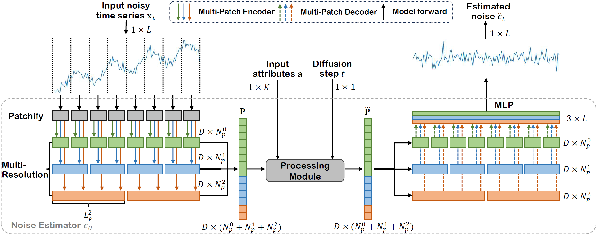
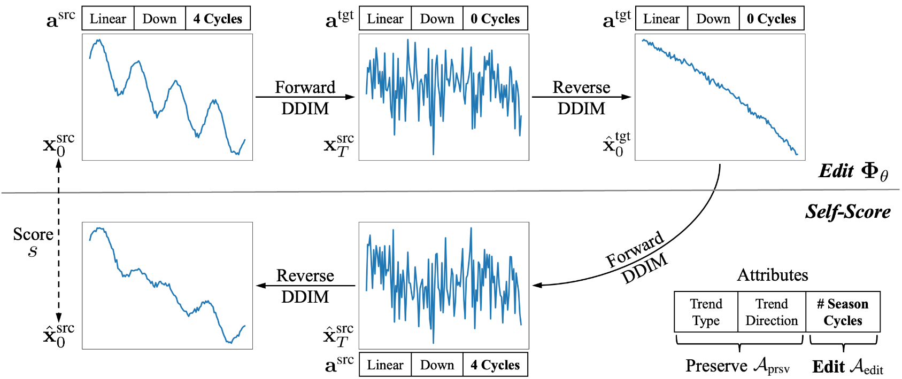
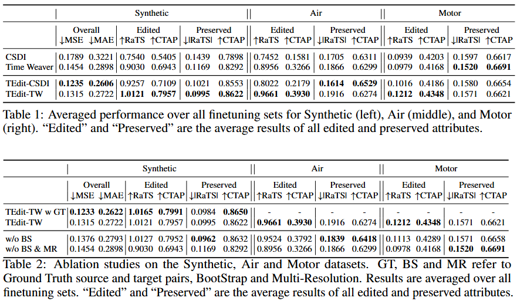

Towards Editing Time Series
Paper: https://openreview.net/pdf?id=qu5NTwZtxA
Code: To Be Announced
Authors
- Baoyu Jing* (University of Illinois at Urbana-Champaign) baoyu.jing@hotmail.com
- Shuqi Gu* (ShanghaiTech University) gushq2024@shanghaitech.edu.cn
- Tianyu Chen (ShanghaiTech University) None
- Zhiyu Yang (ShanghaiTech University) None
- Dongsheng Li (Microsoft Research Asia) dongsli@microsoft.com
- Jingrui He (University of Illinois at Urbana-Champaign) None
- Kan Ren (ShanghaiTech University) renkan@shanghaitech.edu.cn
Abstract
Synthesizing time series data is pivotal in modern society, aiding effective decision making and ensuring privacy preservation in various scenarios. Time series are associated with various attributes, including trends, seasonality, and external infor mation such as location. Recent research has predominantly focused on random unconditional synthesis or conditional synthesis. Nonetheless, these paradigms generate time series from scratch and are incapable of manipulating existing time series samples. This paper introduces a novel task, called Time Series Editing (TSE), to synthesize time series by manipulating existing time series. The objec tive is to modify the given time series according to the specified attributes while preserving other properties unchanged. This task is not trivial due to the inade quacy of data coverage and the intricate relationships between time series and their attributes. To address these issues, we introduce a novel diffusion model, called TEdit. The proposed TEdit is trained using a novel bootstrap learning algorithm that effectively enhances the coverage of the original data. It is also equipped with an innovative multi-resolution modeling and generation paradigm to capture the complex relationships between time series and their attributes. Experimental results demonstrate the efficacy of TEdit for editing specified attributes upon the existing time series data.
Method Overview
Multi-Resolution Noise Estimator:
In this paper, we propose a multi-resolution architecture for the diffusion noise estimator considering that different attributes can influence the time series on varying scales.

As illustrated in the above Figure, our model divide the original time series into serval patch sequences with different resolutions. Then we conncatenate the input patch embeddin sequences of different resolutions into a single vector and parallelly send them into the processing module with other information, e.g., attributes and diffusion step. We use the attention masking mechanism to ensure that attention is only performed in the same resolution.
Bootstrap Learning Algorithm:
To overcome the lack of source and target time series pairs in real-world dataset. We propose a training algorithm called bootstrap. Specifically, it self-scores the time series generated the model itself, and choose the top K samples with the highest score. Then we use these samples to further update the diffusion model.

Experiment Results
We compare our method Time series Editing (TEdit) with the baselines on a synthetic dataset Synthetic and two real-world datasets Air and Motor. As shown in the table bellow, our method significantly improve the performance of overall and edited attributes, while able to preserve the performance of preserved attributes.
The results also show that both the multi-resolution architecture and bootstrap training algorithm play an important role in improving performance.

Case Study
(a) Editing trend type (b) Editing trend direction (c) Editing season cycles
Comparation
Edit the trend type from exponential to logarithm
Edit the trend direction from up to down
Edit the season cycle from 1 to 4